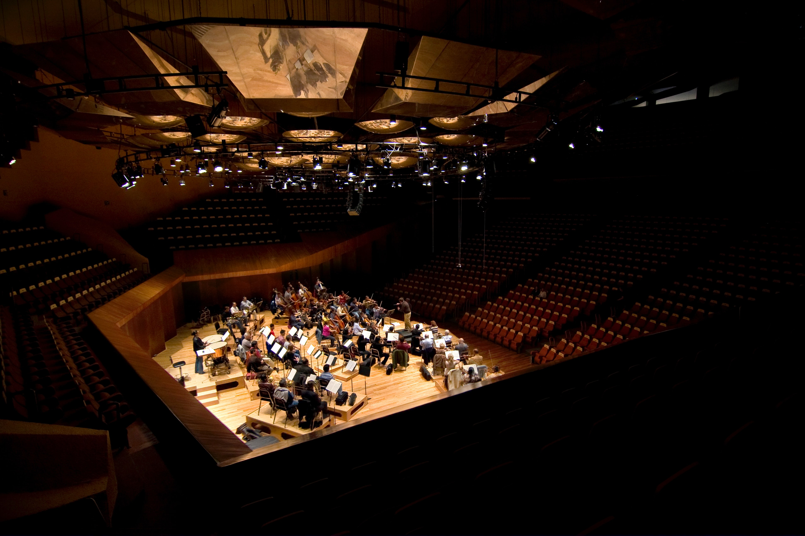
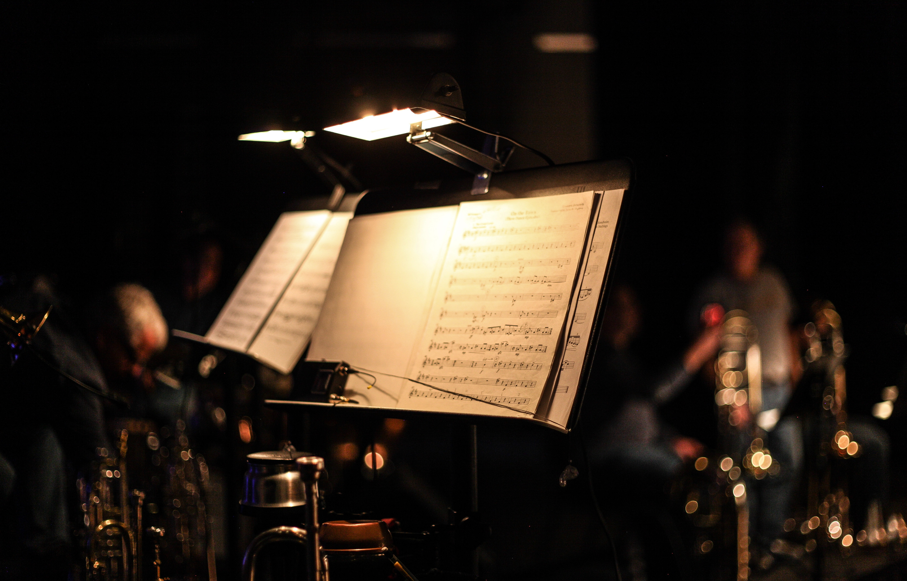

Come make music with us!
The premier music theatre in the country!
"The Nightingales" put on a spellbinding performance last week at our historic music theatre.
The band, consisting of five members, played a combination of classic and contemporary rock songs that had the crowd singing along and swaying to the beat.
The lead singer's powerful vocals and the band's tight instrumentation were a testament to their musical prowess.
The show was a visual treat as well, with intricate lighting and stunning visual effects that perfectly complemented the music.
The band's energy was contagious, and they had the audience on their feet for most of the show.
"The Nightingales" undoubtedly left their mark on the music theatre and proved that they are a force to be reckoned with in the music industry.
It was a night to remember, and one that the audience will not soon forget.
Brigham Young University-Idaho had an incredible performance at our music theatre that left the audience in awe.
The band members, dressed in their professional attire, were full of energy and enthusiasm as they played a variety of songs ranging from classical to contemporary.
The brass section blasted their instruments, the percussion section kept the rhythm going, and the woodwinds played beautifully in harmony.
The band director led them with precision, making sure every note was in place. The sound quality was impeccable, and the audience was swept away by the music.
It was a proud moment for the school and a testament to the hard work and dedication of the young musicians.
The audience gave the band a standing ovation, and they left the stage to thunderous applause.
Being a music judge requires a set of qualifications that go beyond a simple love of music.
A qualified music judge should have a comprehensive knowledge of music theory, composition, and history, as well as experience in performance and/or production.
They should possess excellent listening skills and the ability to recognize and appreciate musical nuances.
In addition, a music judge should be impartial, fair, and able to give constructive feedback to performers.
They must be able to identify and evaluate a variety of musical styles and genres, and understand the context and cultural significance of each.
Finally, a music judge must have excellent communication skills, both written and verbal, to provide detailed and constructive feedback to performers,
as well as to collaborate effectively with other judges or event organizers.

Our competitions can encompass a wide range of performance categories, depending on the specific event.
Generally, competitions will feature both solo and group performances, with participants showcasing their talents in singing, dancing, acting, or a combination of these disciplines.
Categories may also be divided by age group, genre, or skill level, with different criteria for judging depending on the competition's goals.
These events can be a great opportunity for aspiring performers to gain exposure, network with other industry professionals, and receive valuable feedback on their craft.
Ultimately, music theatre competitions are a celebration of talent, creativity, and dedication, providing a platform for performers to share their passion and showcase their skills.
Our music theatres require a range of equipment to provide high-quality performances for their audiences.
At the heart of our setup is the sound system, which typically includes a mixing console, amplifiers, and a variety of speakers to ensure that every note is heard clearly throughout the venue.
Additionally, the lighting system is essential for creating an immersive atmosphere and can include spotlights, wash lights, and color-changing fixtures. The stage itself may also be outfitted with equipment such as microphones,
monitors, and instrument amplifiers to ensure that every musician and performer can hear themselves and their fellow performers clearly. Overall, the equipment at a music theatre is designed to enhance the musical experience and create a
memorable performance for all who attend.